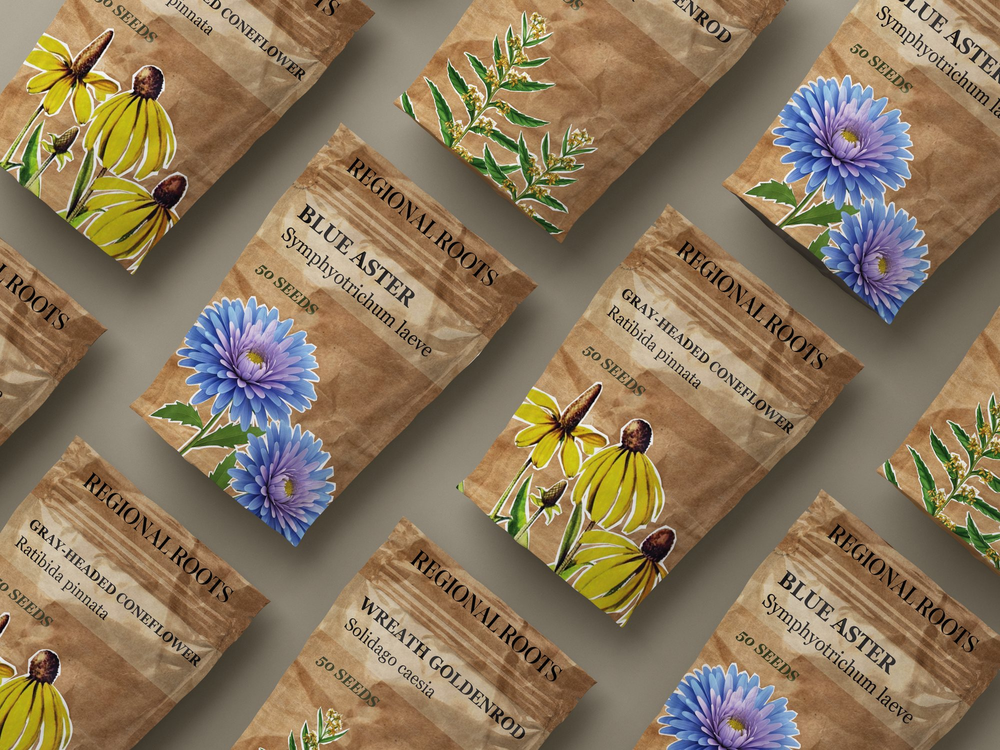
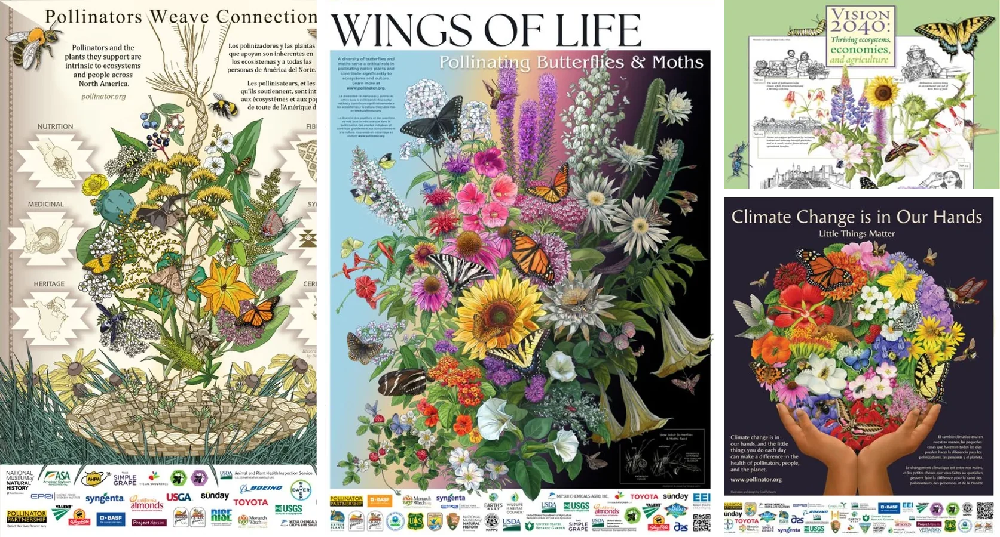
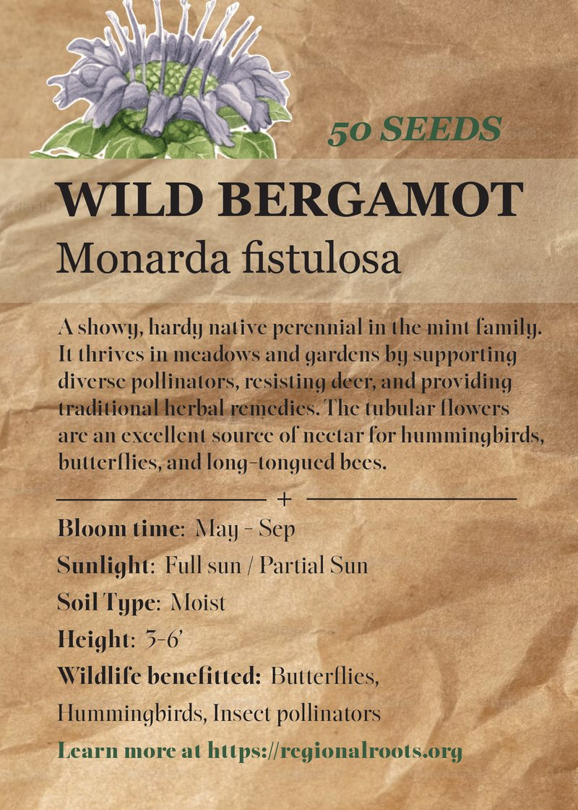
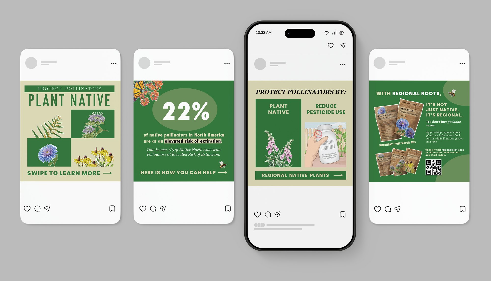

Regional Roots
A campaign to help communities plant native and protect pollinators.

- Role
- Graphic Designer
- Timeline
- May – June 2026
- Tools
- InDesign
Photoshop
Procreate
Overview
Regional Roots is a three-part awareness campaign that encourages communities to plant native and support the pollinators their ecosystems depend on.
- 3print, packaging & social
- 4native Northeast flowers
- 22%of native pollinators at risk
This project aims to increase awareness about the declining pollinator population and encourage communities to support pollinators through environmental actions and educational design.
The problem
Pollinator populations are declining, and most people don't know how simple it is to help.
Habitat loss, pesticide use and suburban development are shrinking pollinator populations. Many people are unaware of how pollinators contribute to the ecosystem and to food production, or how small actions, like choosing native plants, can protect them.
- Audience
- Young adults, students, suburban residents and environmentally conscious community members who want to make a difference close to home.
Strategy
One message across three deliverables, each with its own job.
- 01Poster2D · Print
Eye-catching and informational: introduce native flowers.
- Floral patterns and environmental textures
- Organic typography and illustration
- Soft color palettes
- 02Seed packets3D · Packaging
A branded product that turns awareness into action.
- Paper texture
- Branded name
- Mockups
- 03CarouselScreen · Social
An Instagram post that ties every deliverable together and points to the seeds.
- Eye-catching and engaging
- Interactive
Design decisions
Botanical posters from the Pollinator Partnership set the direction I wanted to take: floral patterns, organic typography, illustrated bees, butterflies and plants, and soft colour palettes.

Type & color
- #e4efcd
- #c2de81
- #849b54
- #a6a0ae
- #88abd7
- #d2cb28
Sigurd leads the headlines with a classic, high-contrast serif. Futura PT balances it with clean, geometric subheads, and Georgia keeps body text and plant labels easy to read, even at small sizes.
The palette stays light and soft so the flowers can take the spotlight. Each color comes straight from the native plants: fresh greens from the leaves and stems, a muted lavender grey and soft blue from the aster, and a warm yellow from the goldenrod and coneflower.
Poster
The final poster narrows in on the Northeast's native flowers. The headline grows larger and bolder so it shares the spotlight with the bouquet, while the flowers shrink to give the layout room to breathe.
Each flower is named with its average height and bloom season, and a region map ties the poster to a specific place, so the message feels local and actionable.
Iterations
The poster went through several rounds of refinement before reaching the final design. It began as a rough Procreate sketch that mapped out the general idea.
Moving into InDesign made it much easier to find illustrations of the flowers and place them together, almost like a bouquet. Each native flower is named, alongside the headline and calls to action.
After the first two drafts, the focus narrowed to two regions and the native flowers that grow there. The illustrations shrink so the poster no longer feels crowded, and the call to action grows larger to grab the viewer's attention.
Seed packets
Four native Northeast flowers, each with its own packet.
The front of each packet features the flower with a white sticker-style outline, carried over from the poster.
- Wild bergamot
- Blue aster
- Gray-headed coneflower
- Wreath goldenrod

The back of each packet explains what the flower needs, when it blooms and which wildlife it supports, with a link to learn more and buy.
The final round named the brand Regional Roots, added the website, and tinted the lighter label panel a subtle green.
Iterations
01Sketches
Rough sketches, then a fresh start after studying real packets.
02Draft 1
The poster's flowers carried over, with descriptions on the back.
03Draft 2
Paper texture, white outlines and fuller descriptions.
Carousel
A four-slide Instagram carousel ties the campaign together. It hooks with the problem, gives two simple actions, and closes on the Regional Roots seed packets with a QR code to claim a local seed mix.

After the final critique, the gradient from the second slide was pushed further and the white outline was added to every flower and to the seed packets, helping them pop off the page.
Reflection
What you learned from this project, what you'd do next, and how critique shaped the final work.
Botanical illustrations sourced from Maine Native Plants, Adobe Stock, Shutterstock and other references. Layout, branding, typography and design by Katie Lee.